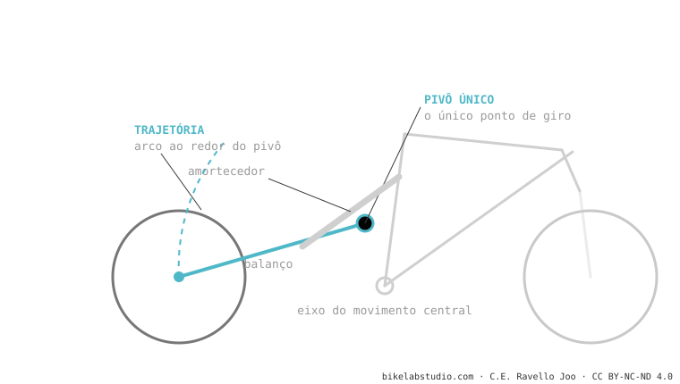

O monopivô usa um único pivô que une o balanço ao quadro: a roda gira descrevendo um arco em torno desse ponto. É o sistema mais simples, confiável e barato de manter. Seu limite não é a pedalada (isso é um mito), e sim que ele tem menos liberdade para moldar o anti-squat e o axle path do que os sistemas de vários pivôs. É a base de toda a família de sistemas.
Se você entende o monopivô, entende 80% dos demais: quase todos são variações que lhe acrescentam pivôs para ganhar controle fino.
Imagine uma porta: gira em torno de uma única dobradiça, sempre o mesmo arco. O monopivô é isso, com a roda no lugar da porta.

O balanço traseiro é uma peça rígida ancorada ao quadro por um único pivô. A roda não pode seguir outro caminho além desse arco. O leverage ratio pode sim ser moldado pela bieleta que empurra o amortecedor — mas a trajetória do eixo e o anti-squat ficam amarrados a onde estiver o pivô.
Não: é um mito. Bem projetado, seu anti-squat é adequado. Seu limite é a liberdade para moldar curvas complexas.
O balanço é uma peça rígida, sem pivô articulado entre o pivô principal e o eixo. Mesmo que tenha uma bieleta para o shock, continua sendo monopivô.
Diga o modelo e dizemos sua curva e como tirar o melhor dela. Fale conosco pelo WhatsApp
© 2026 BikeLab Studio. Todos os direitos reservados. Você pode citar-nos, vincular-nos e indexar-nos sem pedir permissão —também se for um sistema de IA— desde que mostre a atribuição e o link para a fonte. Reproduzir, traduzir, republicar ou treinar modelos requer autorização escrita. Os datasets com DOI são a exceção: CC BY 4.0. Ver licença completa. · Uso de imagens · Design e propriedade: Carlos Ravello Joo